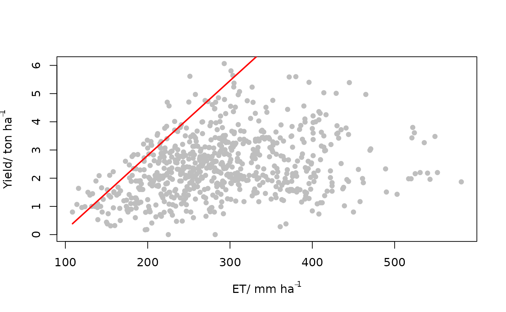

This function fits a response model to the upper limits of a scatter plot of
of x and y to determine the most efficient response of y
as a function of x (given a measurement error of y) based on a
censored distribution (Milne et al., 2016). The location of censor in the data
cloud is determined based on the maximum likelihood approach. This is done using
optimization procedure and hence requires some starting guess parameters for the
proposed model. It then compares the results with an uncensored normal bivariate
distribution to access the appropriateness of the censored model.
Usage
cbvn(data,model="lp", equation=NULL, start, sigh, UpLo="U", optim.method="BFGS",
Hessian=FALSE, plot=TRUE, line_smooth=1000, lwd=2, l_col="red",...)Arguments
- data
A dataframe with two numeric columns, independent (
x) and dependent (y) variables respectively.- model
Selects the functional form of the boundary line. It includes
"blm"for linear model,"lp"for linear plateau model,"mit"for the Mitscherlich model,"schmidt"for the Schmidt model,"logistic"for logistic model,"logisticND"for logistic model proposed by Nelder (1961),"inv-logistic"for the inverse logistic model,"double-logistic"for the double logistic model,"qd"for quadratic model and the"trapezium"for the trapezium model. For custom models, setmodel = "other".- equation
A custom model function writen in the form of an R function. Applies only when argument
model="other", else it isNULL.- start
A numeric vector of initial starting values for optimization in fitting the boundary model. Its length and arrangement depend on the suggested model:
For the
"blm"model, it is a vector of length 7 arranged as the intercept, the slope, mean ofx, mean ofy, standard deviation ofx, standard deviation ofyand the correlation ofxandy.For the
"lp"model, it is a vector of length 8 arranged as the intercept, the slope, the maximum or plateau response, mean ofx, mean ofy, standard deviation ofx, standard deviation ofyand the correlation ofxandy.For the
"mit"model, it is a vector of length 8 arranged as the intercept, shape parameter, the maximum or plateau response, mean ofx, mean ofy, standard deviation ofx, standard deviation ofyand the correlation ofxandy.For the
"logistic","inv-logistic"and"logisticND"models, it is a vector of length 8 arranged as scaling parameter, shape parameter, the maximum or plateau value, mean ofx, mean ofy, standard deviation ofx, standard deviation ofyand the correlation ofxandy.For the
"double-logistic"model, it is a vector of length 11 arranged as scaling parameter, shape parameter, maximum response, maximum response, scaling parameter two, shape parameter two, mean ofx, mean ofy, standard deviation ofx, standard deviation ofyand the correlation ofxandy.For the
"trapezium"model, it is a vector of length 10 arranged as intercept one, slope one, maximum response, intercept two, slope two, mean ofx, mean ofy, standard deviation ofx, standard deviation ofyand the correlation ofxandy.For the
"qd"model, it is a vector of length 8 arranged as a constant, linear coefficient, quadratic coefficient,mean ofx, mean ofy, standard deviation ofx, standard deviation ofyand the correlation ofxandy.For the
"schmidt"model, it is a vector of length 8 arranged the scaling parameter, shape parameter (x-value at maximum response ), maximum response, mean ofx, mean ofy, standard deviation ofx, standard deviation ofyand the correlation ofxandy.
- sigh
Standard deviation of the measurement error.
- UpLo
Selects the type of boundary.
"U"fits the upper boundary and "L" fits the lower boundary.- optim.method
Describes the method used to optimize the model as in the
optim()function. The methods include"Nelder-Mead","BFGS","CG","L-BFGS-B","SANN"and"Brent".- Hessian
If
True, the hessian matrix is part of the output (default isFALSE`).- plot
If
TRUE, a plot is part of the output. IfFALSE, plot is not part of output (default isTRUE).- line_smooth
Parameter that describes the smoothness of the boundary line. (default is 1000). The higher the value, the smoother the line.
- lwd
Determines the thickness of the boundary line on the plot (default is 1).
- l_col
Selects the color of the boundary line.
- ...
Additional graphical parameters as in the
par()function.
Value
A list of length 5 consisting of the fitted model, equation form, parameters of the boundary line, AIC (for boundary line model and a null model) and a hessian matrix. Additionally, a graphical representation of the boundary line on the scatter plot is produced.
Details
Some inbuilt models are available for the cbvn() function. The suggest model
forms are as follows:
Linear model (
"blm") $$y=\beta_1 + \beta_2x$$ where \(\beta_1\) is the intercept and \(\beta_2\) is the slope.Linear plateau model (
"lp") $$y= {\rm min}(\beta_1+\beta_2x, \beta_0)$$ where \(\beta_1\) is the intercept , \(\beta_2\) is the slope and \(\beta_0\) is the maximum response.The logistic (
"logistic") and inverse logistic ("inv-logistic") models $$ y= \frac{\beta_0}{1+e^{\beta_2(\beta_1-x)}}$$ $$ y= \beta_0 - \frac{\beta_0}{1+e^{\beta_2(\beta_1-x)}}$$ where \(\beta_1\) is a scaling parameter , \(\beta_2\) is a shape parameter and \(\beta_0\) is the maximum response.Logistic model (
"logisticND") (Nelder (1961)) $$ y= \frac{\beta_0}{1+(\beta_1 \times e^{-\beta_2x})}$$ where \(\beta_1\) is a scaling parameter, \(\beta_2\) is a shape parameter and \(\beta_0\) is the maximum response.Double logistic model (
"double-logistic") $$ y= \frac{\beta_{0,1}}{1+e^{\beta_2(\beta_1-x)}} - \frac{\beta_{0,2}}{1+e^{\beta_4(\beta_3-x)}}$$ where \(\beta_1\) is a scaling parameter one, \(\beta_2\) is shape parameter one, \(\beta_{0,1}\) and \(\beta_{0,2}\) are the maximum response , \(\beta_3\) is a scaling parameter two and \(\beta_4\) is a shape parameter two.Quadratic model (
"qd") $$y=\beta_1 + \beta_2x + \beta_3x^2$$ where \(\beta_1\) is a constant, \(\beta_2\) is a linear coefficient and \(\beta_3\) is the quadratic coefficient.Trapezium model (
"trapezium") $$y={\rm min}(\beta_1+\beta_2x, \beta_0, \beta_3 + \beta_4x)$$ where \(\beta_1\) is the intercept one, \(\beta_2\) is the slope one, \(\beta_0\) is the maximum response, \(\beta_3\) is the intercept two and \(\beta_3\) is the slope two.Mitscherlich model (
"mit") $$y= \beta_0 - \beta_1*\beta_2^x$$ where \(\beta_1\) is the intercept, \(\beta_2\) is a shape parameter and \(\beta_0\) is the maximum response.Schmidt model (
"schmidt") $$y= \beta_0 + \beta_1(x-\beta_2)^2$$ where \(\beta_1\) is a scaling parameter, \(\beta_2\) is a shape parameter (x-value at maximum response ) and \(\beta_0\) is the maximum response .
The function cbvn() utilities the optimization procedure of the
optim() function to determine the model parameters. There is a tendency
for optimization algorithms to settle at a local optimum. To remove the risk of
settling for local optimum parameters, it is advised that the function is run using
several starting values and the results with the smallest likelihood (or AIC)
can be taken as a representation of the global optimum.
The common errors encountered due to poor start values
function cannot be evaluated at initial parameters
initial value in 'vmmin' is not finite
References
Nelder, J.A. 1961. The fitting of a generalization of the logistic curve. Biometrics 17: 89–110.
Lark, R. M., & Milne, A. E. (2016). Boundary line analysis of the effect of water filled pore space on nitrous oxide emission from cores of arable soil. European Journal of Soil Science, 67 , 148-159.
Lark, R. M., Gillingham, V., Langton, D., & Marchant, B. P. (2020). Boundary line models for soil nutrient concentrations and wheat yield in national-scale datasets. European Journal of Soil Science, 71 , 334-351.
Milne, A. E., Ferguson, R. B., & Lark, R. M. (2006). Estimating a boundary line model for a biological response by maximum likelihood.Annals of Applied Biology, 149, 223–234.
Phillips, B.F. & Campbell, N.A. 1968. A new method of fitting the von Bertelanffy growth curve using data on the whelk. Dicathais, Growth 32: 317–329.
Schmidt, U., Thöni, H., & Kaupenjohann, M. (2000). Using a boundary line approach to analyze N2O flux data from agricultural soils. Nutrient Cycling in Agroecosystems, 57, 119-129.
Author
Chawezi Miti chawezi.miti@nottingham.ac.uk
Richard Murray Lark murray.lark@nottingham.ac.uk
Examples
x<-evapotranspiration$`ET(mm)`
y<-evapotranspiration$`yield(t/ha)`
data<-data.frame(x,y)
start<-c(0.5,0.02,289.6,2.4,83.7,1.07,0.287)
cbvn(data, start=start, model = "blm", sigh=0.51,
xlab=expression("ET/ mm ha"^-1),
ylab=expression("Yield/ ton ha"^-1),
pch=16, col="grey", line_smooth = 100)

#> $Model
#> [1] "blm"
#>
#> $Equation
#> [1] y = β₁ + β₂x
#>
#> $Parameters
#> Estimate Standard error
#> β₁ -2.49443314 0.327798345
#> β₂ 0.02650941 0.001883713
#> mux 289.62771965 3.183447542
#> muy 2.48256627 0.045217145
#> sdx 83.68289740 2.252784160
#> sdy 0.95202526 0.034996376
#> rcorr 0.20972313 0.052543229
#>
#> $AIC
#>
#> mvn 10092.78
#> BL 10053.09
#>